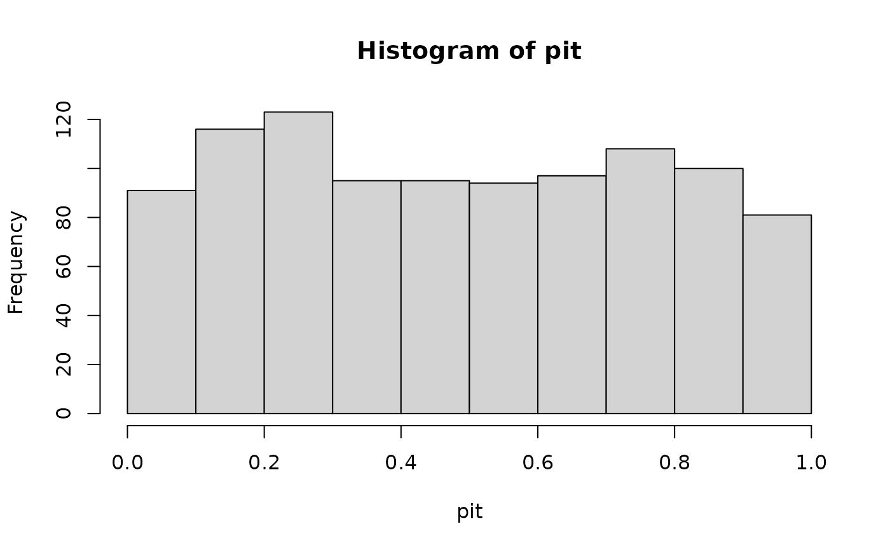
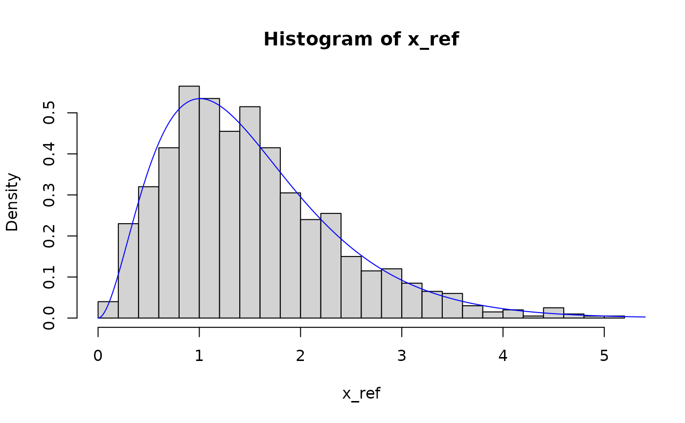
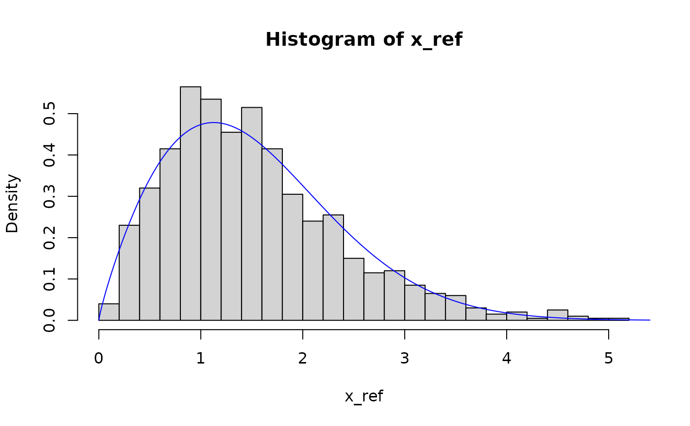
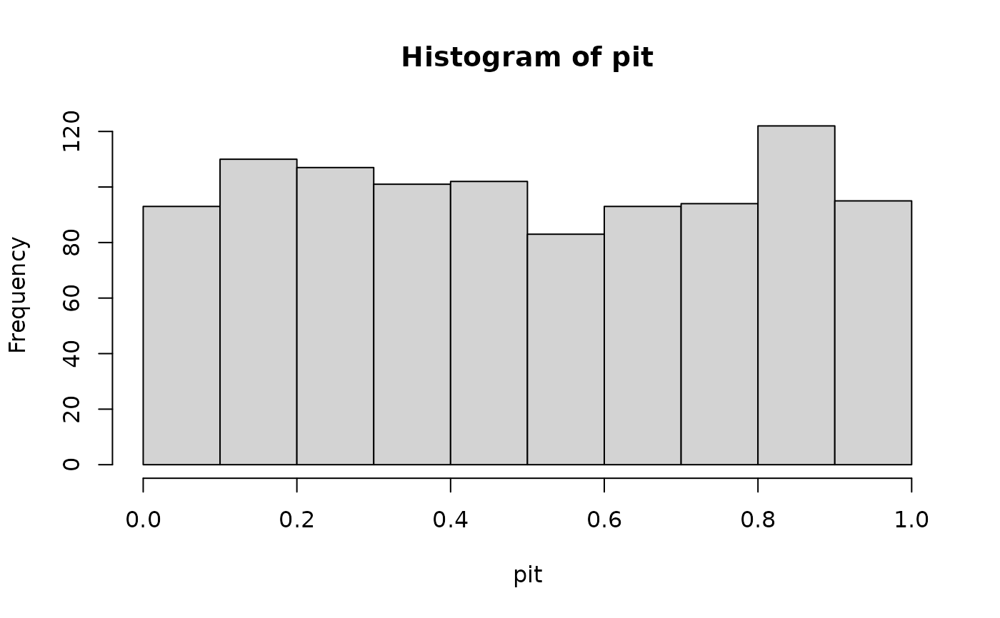
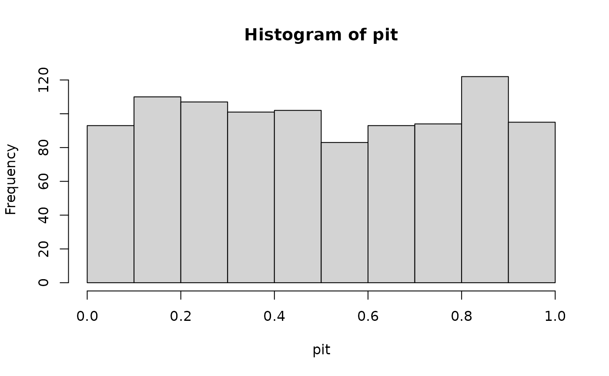

Function to estimate the cumulative distribution function (CDF) from a set of observations, and return the corresponding probability integral transform (PIT) values.
Usage
get_pit(
ref_data,
new_data = NULL,
ref_preds = NULL,
new_preds = NULL,
dist = "empirical",
method = "mle",
return_fit = FALSE,
lower = -Inf,
upper = Inf,
cens = NULL,
n_thres = 20,
...
)Arguments
- ref_data
numeric vector from which to estimate the CDF.
- new_data
numeric vector from which to calculate the PIT values.
- dist
character string specifying the distribution to be fit to the data; one of
'empirical','kde','norm','lnorm','logis','llogis','exp','gamma', and'weibull'.- method
A character string coding for the fitting method:
"mle"for 'maximum likelihood estimation',"mme"for 'moment matching estimation',"qme"for 'quantile matching estimation',"mge"for 'maximum goodness-of-fit estimation' and"mse"for 'maximum spacing estimation'.- return_fit
logical specifying whether to return parameters and goodness-of-fit statistics for the distribution fit.
- lower, upper
numeric values specifying the lower and upper bounds at which censoring is to be performed.
- cens
values to assign to censored values; either a string (
'normal'or'prob'), corresponding to common choices, or a custom numeric vector of length two.- n_thres
minimum number of data points required to estimate the distribution; default is 20.
- ...
additional arguments to be passed to
fitdistrplus::fitdist
Value
A vector of PIT values if return_fit = F, or, if return_fit = T, a list containing
the estimated CDF (F_x), the corresponding parameters (params), and
properties of the fit (fit_props).
Details
dist specifies the distribution used to estimate the cumulative distribution
function of the observations. By default, dist = "empirical", in which case
the CDF is estimated empirically from the values ref_data. This is only
recommended if there are at least 100 values in ref_data, and a warning
message is returned otherwise.
Parametric distributions are more appropriate when there is relatively little data,
and good reason to expect that the data follows a particular distribution. To
check that the chosen parametric distribution is appropriate, the argument
return_fit can be used to return the estimated parameters of the
distribution, as well as Kolmogorov-Smirnov goodness-of-fit test statistics.
A flexible compromise between using empirical methods and parametric distributions is to
use kernel density estimation, dist = "kde".
dist must be one of: 'empirical' (the empirical distribution given data),
'kde' (kernel density estimation), norm', 'lnorm', 'logis', 'llogis', 'exp', 'gamma', and 'weibull'.
For the parametric distributions, parameters are estimated using maximum likelihood estimation.
Examples
N <- 1000
shape <- 3
rate <- 2
x_ref <- rgamma(N, shape, rate)
x_new <- rgamma(N, shape, rate)
# empirical distribution
pit <- get_pit(x_ref, x_new)
hist(pit)

# gamma distribution
pit <- get_pit(x_ref, x_new, dist = "gamma", return_fit = TRUE)
hist(pit$pit)
hist(x_ref, breaks = 30, probability = TRUE)
lines(seq(0, 10, 0.01), dgamma(seq(0, 10, 0.01), pit$params[1], pit$params[2]), col = "blue")

# weibull distribution
pit <- get_pit(x_ref, x_new, dist = "weibull", return_fit = TRUE)
hist(pit$pit)
hist(x_ref, breaks = 30, probability = TRUE)
lines(seq(0, 10, 0.01), dweibull(seq(0, 10, 0.01), pit$params[1], pit$params[2]), col = "blue")

# exponential distribution
pit <- get_pit(x_ref, x_new, dist = "exp", return_fit = TRUE)
hist(pit$pit)
hist(x_ref, breaks = 30, probability = TRUE)
lines(seq(0, 10, 0.01), dexp(seq(0, 10, 0.01), pit$params[1]), col = "blue")
 # gamma distribution with censoring
x_ref <- c(x_ref, numeric(N))
pit <- get_pit(x_ref, dist = "gamma", lower = 0, cens = "prob")
hist(pit)
# gamma distribution with censoring
x_ref <- c(x_ref, numeric(N))
pit <- get_pit(x_ref, dist = "gamma", lower = 0, cens = "prob")
hist(pit)
 mean(pit) # = 1/2
#> [1] 0.500608
mean(qnorm(pit)) # != 0
#> [1] 0.06237125
pit <- get_pit(x_ref, dist = "gamma", lower = 0, cens = "normal")
hist(qnorm(pit))
mean(pit) # = 1/2
#> [1] 0.500608
mean(qnorm(pit)) # != 0
#> [1] 0.06237125
pit <- get_pit(x_ref, dist = "gamma", lower = 0, cens = "normal")
hist(qnorm(pit))
 mean(pit) # != 1/2
#> [1] 0.4818424
mean(qnorm(pit)) # = 0
#> [1] 0.0006738413
## normal distribution with trend in mean
x <- seq(-10, 20, length.out = N)
x_ref <- rnorm(N, x + shape, 2)
plot(x_ref)
mean(pit) # != 1/2
#> [1] 0.4818424
mean(qnorm(pit)) # = 0
#> [1] 0.0006738413
## normal distribution with trend in mean
x <- seq(-10, 20, length.out = N)
x_ref <- rnorm(N, x + shape, 2)
plot(x_ref)
 preds <- data.frame(t = x)
pit <- get_pit(x_ref, ref_preds = preds, dist = "norm")
#> GAMLSS-RS iteration 1: Global Deviance = 4204.338
#> GAMLSS-RS iteration 2: Global Deviance = 4204.338
hist(pit)
preds <- data.frame(t = x)
pit <- get_pit(x_ref, ref_preds = preds, dist = "norm")
#> GAMLSS-RS iteration 1: Global Deviance = 4204.338
#> GAMLSS-RS iteration 2: Global Deviance = 4204.338
hist(pit)
 ## normal distribution with trend in mean and standard deviation
x_ref <- rnorm(N, x + shape, exp(x/10))
plot(x_ref)
## normal distribution with trend in mean and standard deviation
x_ref <- rnorm(N, x + shape, exp(x/10))
plot(x_ref)
 preds <- data.frame(t = x)
pit <- get_pit(x_ref, ref_preds = preds, dist = "norm", sigma.formula = ~ .)
#> GAMLSS-RS iteration 1: Global Deviance = 3833.889
#> GAMLSS-RS iteration 2: Global Deviance = 3829.376
#> GAMLSS-RS iteration 3: Global Deviance = 3829.376
hist(pit)

preds <- data.frame(t = x)
pit <- get_pit(x_ref, ref_preds = preds, dist = "norm", sigma.formula = ~ .)
#> GAMLSS-RS iteration 1: Global Deviance = 3833.889
#> GAMLSS-RS iteration 2: Global Deviance = 3829.376
#> GAMLSS-RS iteration 3: Global Deviance = 3829.376
hist(pit)
